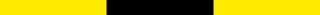

ESPAÑOL
 ENGLISH
ENGLISH
ENGLISH

Todos los faros de la costa peruana forma parte del proyecto Irradia, una iniciativa conjunta del MALI y la Fundación Telefónica Movistar para promover la utilización de los medios de producción digital como estímulo para la creación artística.
TODOS LOS FAROS DE LA COSTA PERUANA
Luz María Bedoya
1
PRESENTACIÓN
PRESENTACIÓN
Todos los faros de la costa peruana es un proyecto multidisciplinar que explora las relaciones entre navegación, sonido y escritura.
Los faros son señales encadenadas en el litoral. Cada uno de ellos posee un código propio, simple pero efectivo, cuya función es orientar a los navegantes. La guía acontece en horas de día como en el lapso de noche. En la claridad los faros se diferencian unos de otros por su apariencia física; en la oscuridad se identifican por su tipo de luz. A partir de las características lumínicas y estructurales de los 56 faros desplegados a lo largo de los 3,000 kilómetros del litoral peruano, he desarrollado una partitura gráfica para ser interpretada libremente por diversos músicos.
Los códigos individuales de los faros resultan en variaciones que, en sucesión, evocan las peculiaridades físico-geográficas existentes en el territorio de la costa peruana. Si la costa es una línea plagada de faros, la partitura es una concatenación de gráficos, marcas e instrucciones que devuelve a esos faros como fuente sin postularse como su traducción. Sobre la base de datos mensurables y filocientíficos, Todos los faros de la costa peruana presenta una partitura de notaciones abiertas que asume la indeterminación propia de la música experimental.
Como parte del programa público de este proyecto he invitado a distintos autores a producir, en cada caso, un texto inspirado en un concepto específico del lenguaje de la navegación. Se trata de tomar términos vinculados a un marco instructivo que, descontextualizados, se prestan para múltiples derivas poéticas e interpretativas.
Navegación, sonido y escritura conforman así una red de sistemas notacionales generativos susceptibles de retroalimentarse y desviarse mutuamente.
Luz María Bedoya
Enero, 2021
- Teresa Cabrera
- Macri Cáceres
- Lucia Castello Branco
- Orieta Chrem
- Vered Engelhard
- Gabriela Ezeta
- Safaa Fathy
- Teté Leguía
- José Ignacio Padilla
- Santiago Pillado
- Paruro
- Peter Szsendy
- Santiago Vera
Todos los faros de la costa peruana forma parte del proyecto Irradia, una iniciativa conjunta del MALI y la Fundación Telefónica Movistar para promover la utilización de los medios de producción digital como estímulo para la creación artística.
TODOS LOS FAROS DE LA COSTA PERUANA
Luz María Bedoya
2
FAROS
x
FAROS
3
NAVEGACIÓN
x
NAVEGACIÓN
4
PARTITURA
x
PARTITURA
5
INTERPRETACIONES
x
INTERPRETACIONES
6
PODCASTS
x
PODCASTS
7
CRÉDITOS
x
CRÉDITOS
8
AGRADECIMIENTOS
x
AGRADECIMIENTOS